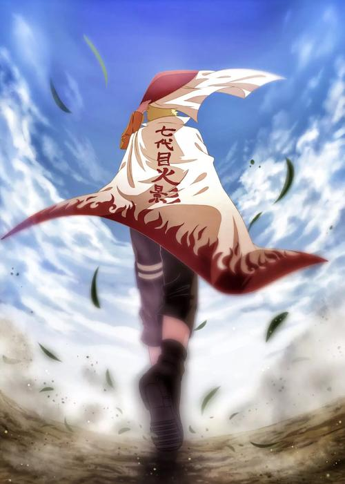
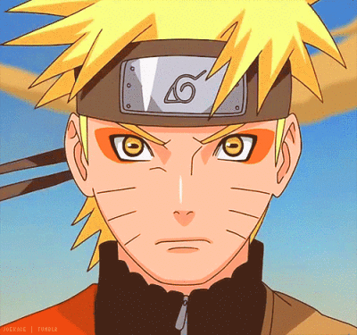
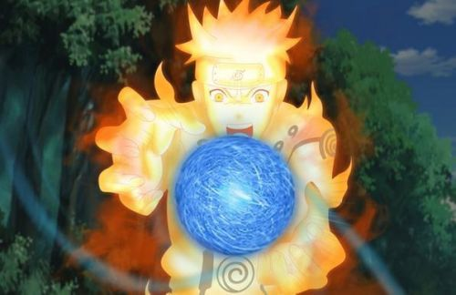

 |
漩涡鸣人
漩涡鸣人，日本漫画《火影忍者》及其衍生作品中的男主角。火之国木叶隐村的忍者，第四代火影波风水门和漩涡玖辛奈之子，六道仙人次子阿修罗的查克拉转世者。刚出生时父母为保护村子而牺牲，并将尾兽“九尾”封印在鸣人体内。成为孤儿的鸣人从小被村民歧视，但在唯一认同他的老师海野伊鲁卡以及第三代火影猿飞日斩的鼓励下有了要成为火影的梦想，让所有人都认同他的存在。成为忍者后，和旗木卡卡西、宇智波佐助以及春野樱组成第七班进行各种任务。
为实现梦想，和守护伙伴们的羁绊，鸣人不断修炼变强，作为木叶“三忍”之一自来也的弟子，在追求梦想的过程中不断突破自我，贯彻了自身的忍道，获得人们的认可。最后与忍者联军以及宇智波佐助还有九尾一同终结了战争，为忍者世界带来和平，并实现自己成为火影（第七代火影）和忍界英雄的梦想。
|
 |